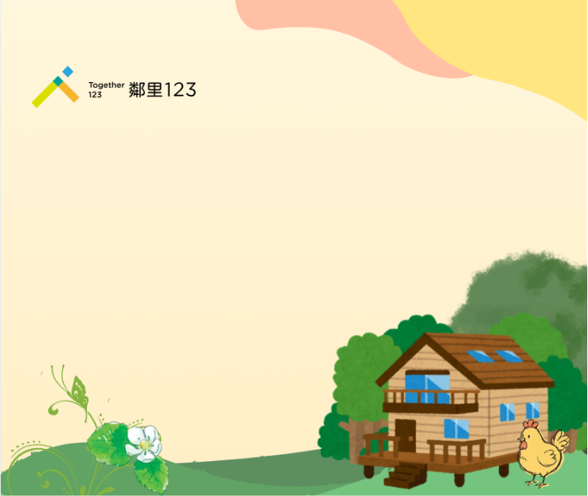

以「家」的溫度為核心，優化 Connect 10 跨專業協作照護平台，傳遞包容與關懷。

加大觸控目標區域，並拉開與相鄰按鈕的間距，避免照服員因操作區域過小導致誤觸。
優化不同品牌手機系統相容性，確保各型號行動裝置觸控感應順暢無障礙。
新增系統設定自主調節字級功能，讓照服員在急迫照護環境中也能清晰閱讀。
新增提前 5-10 分鐘推播提醒，協助新人與忙碌夥伴防範遺漏交接行程。
.png) 煦光與你
煦光與你